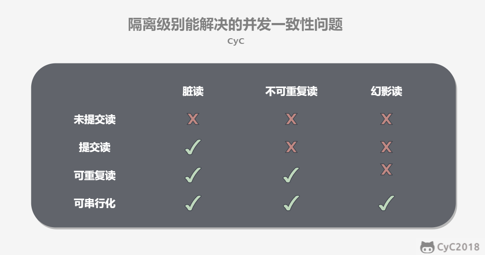
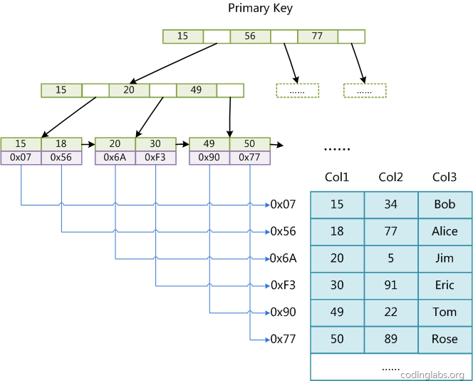
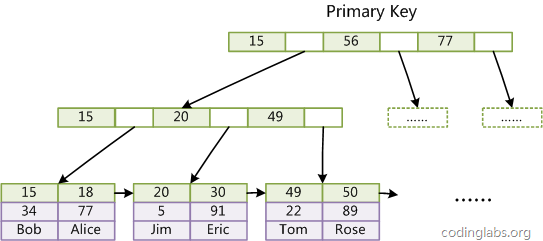
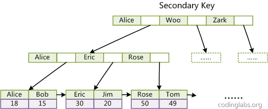

[TOC]
0. 前言
起因：为2020年暑期实习生面试而准备，主要针对后端开发。
很多知识还了解得不够深入，如果存在错误，欢迎指正。
1. 操作系统
1.1. 同步 异步 阻塞 非阻塞
同步和异步关注的是消息通信机制：
- 同步：A调用B，B在没有执行完成前不会返回，但一旦B返回，A就会得到返回结果。A是主动等待返回结果。
- 异步：A调用B，B直接返回，但A没有得到返回结果，B执行完成后会将结果通过状态、消息告知A。A被动等待返回结果。
举个栗子：
你打电话去教务处查成绩。接通电话后，你说：“帮我查一下成绩”，教务处回答：“好，我查一下”。
如果是同步，那教务处不会挂电话，查到成绩后，告诉了你，才会挂电话。期间，你可以一直问：“好了没，好了没”。
如果是异步，那教务处说完就把电话挂了，查到成绩后，再通过短信或者电话的形式告诉你。
阻塞和非阻塞关注的是程序在等待调用结果（消息，返回值）时的状态：
- 阻塞：A在等待B完成并返回的过程中，不可以做其它事情。
- 非阻塞：A在等待B完成并返回的过程中，可以做其它事情。
继续上述栗子：
不管是不挂电话等还是挂电话等，你都可以在这期间不做或者做其它事情，这就是阻塞和非阻塞。
那么：
- 同步阻塞，就是不挂电话等待的期间，你不做其它事情。这像是C语言的函数调用。
- 同步非阻塞，就是不挂电话等待的期间，你做其它事情（比如吃手指）。在程序中，一般通过轮询的方式，就像做了一部分事情后，就问被调用程序：“好了没，好了没”，如果好了，就去获取返回结果。
- 异步阻塞，就是挂了电话，等待成绩通知的期间，你什么都不做（四不四很傻）。
- 异步非阻塞，就是挂了电话，等待成绩通知的期间，你可以吃手指。这像是JS语言的异步函数调用。
1.2. select, poll, epoll
（对这部分知识还是不太清楚。最近才发现CSAPP的最后一章并发编程中，有关于select的内容，后悔当时没看完。。。
select, poll, epoll都是I/O多路复用的机制。I/O多路复用就是通过一种机制，一个进程可以监视多个描述符，一旦某个描述符就绪（一般是读就绪或者写就绪），就通知程序进行相应的读写操作。
比如网络服务器需要监视多个socket，一旦其中一个有数据，就读入。
当用户进程调用了
select，那么整个进程会被阻塞，而同时，kernel会“监视”所有select负责的socket，当任何一个socket中的数据准备好了，select就会返回。这个时候用户进程再调用read操作，将数据从kernel拷贝到用户进程。
那么，如何知道socket有数据呢？
select和poll都需要通过遍历文件描述符来获取已经就绪的socket。事实上，同时连接的大量客户端在一时刻可能只有很少的处于就绪状态，因此随着监视的描述符数量的增长，其效率也会线性下降。
select和poll是同步阻塞的，为无差别轮询。
而
epoll可以理解为event poll，不同于忙轮询和无差别轮询，epoll之会把哪个流发生了怎样的I/O事件通知我们。此时我们对这些流的操作都是有意义的。（复杂度降低到了O(k)，k为产生I/O事件的流的个数）
1.3. 进程之间的通信方式以及优缺点
- 管道（PIPE）
- 有名管道：一种半双工(数据可以在一个信号载体的两个方向上传输，但是不能同时传输)的通信方式，它允许无亲缘关系进程间的通信
- 优点：可以实现任意关系的进程间的通信
- 缺点：
- 长期存于系统中，使用不当容易出错
- 缓冲区有限
- 无名管道：一种半双工的通信方式，只能在具有亲缘关系的进程间使用（父子进程）
- 优点：简单方便
- 缺点：
- 局限于单向通信
- 只能创建在它的进程以及其有亲缘关系的进程之间
- 缓冲区有限
- 有名管道：一种半双工(数据可以在一个信号载体的两个方向上传输，但是不能同时传输)的通信方式，它允许无亲缘关系进程间的通信
- 信号量（Semaphore）：一个计数器，可以用来控制多个线程对共享资源的访问
- 优点：可以同步进程
- 缺点：信号量有限
- 信号（Signal）：一种比较复杂的通信方式，用于通知接收进程某个事件已经发生
- 消息队列（Message Queue）：是消息的链表，存放在内核中并由消息队列标识符标识
- 优点：可以实现任意进程间的通信，并通过系统调用函数来实现消息发送和接收之间的同步，无需考虑同步问题，方便
- 缺点：信息的复制需要额外消耗 CPU 的时间，不适宜于信息量大或操作频繁的场合
- 共享内存（Shared Memory）：映射一段能被其他进程所访问的内存，这段共享内存由一个进程创建，但多个进程都可以访问
- 优点：无须复制，快捷，信息量大
- 缺点：
- 通信是通过将共享空间缓冲区直接附加到进程的虚拟地址空间中来实现的，因此进程间的读写操作的同步问题
- 利用内存缓冲区直接交换信息，内存的实体存在于计算机中，只能同一个计算机系统中的诸多进程共享，不方便网络通信
- 套接字（Socket）：可用于不同计算机间的进程通信
- 优点：
- 传输数据为字节级，传输数据可自定义，数据量小效率高
- 传输数据时间短，性能高
- 适合于客户端和服务器端之间信息实时交互
- 可以加密,数据安全性强
- 缺点：需对传输的数据进行解析，转化成应用级的数据。
- 优点：
1.4. 线程之间的数据同步
- 锁机制：包括互斥锁/量(mutex)、读写锁(reader-writer lock)、自旋锁(spin lock)、条件变量(condition)
- 互斥锁/量(mutex)：提供了以排他方式防止数据结构被并发修改的方法。
- 读写锁(reader-writer lock)：允许多个线程同时读共享数据，而对写操作是互斥的。
- 自旋锁(spin lock)：与互斥锁类似，都是为了保护共享资源。互斥锁是当资源被占用，申请者进入睡眠状态；而自旋锁则循环检测保持者是否已经释放锁。
- 条件变量(condition)：可以以原子的方式阻塞进程，直到某个特定条件为真为止。对条件的测试是在互斥锁的保护下进行的。条件变量始终与互斥锁一起使用。
- 信号量机制(Semaphore)
- 无名线程信号量
- 命名线程信号量
- 信号机制(Signal)：类似进程间的信号处理
- 屏障（barrier）：屏障允许每个线程等待，直到所有的合作线程都达到某一点，然后从该点继续执行。
线程间的通信目的主要是用于线程同步，所以线程没有像进程通信中的用于数据交换的通信机制
1.5. 孤儿进程与僵尸进程
孤儿进程：一个父进程退出，而它的一个或多个子进程还在运行，那么那些子进程将成为孤儿进程。孤儿进程将被init进程(进程号为1)所收养，并由init进程对它们完成状态收集工作。
僵尸进程：一个进程使用fork创建子进程，如果子进程退出，而父进程并没有调用wait或waitpid获取子进程的状态信息，那么子进程的进程描述符仍然保存在系统中。这种进程称之为僵尸进程。
1.6. 程序加载过程
以ELF文件的运行为例。当执行./test时发生了什么：
- shell读取命令发现这是一个执行命令。调用
fork()并在子进程中执行execve("./test", *argv[], *envp[])。 execve系统调用会使进程陷入内核态，调用sys_execve->do_execve-> …(sys_execve检测execve的后两个参数，do_execve判断文件类型并调用对应的处理器)，最后调用load_elf_binary解析文件头，如果程序为动态链接则通过。interp确定加载器路径，然后通过程序头表加载ELF文件，最后修改sys_execve返回地址返回用户态(动态链接返回ld.so的entry point，静态链接返回ELF的entry point)。- 动态链接情况下，ld.so会进行映射共享库，初始化GOT等操作，最后返回ELF的entry point。
- ELF的
entry point一般为_start，负责将环境变量指针，.init指针和.fini指针传给libc_start_main函数。 libc_start_main函数依次调用.init，main，.fini，最后执行exit结束程序的运行。
1.7. gdb调试的本质
gdb调试的本质是ptrace系统调用。
单步执行的本质是调用ptrace时，传入单步执行的命令——PTRACE_SINGLESTEP。
断点的本质是软中断——int 3。
1.8. fork() 函数的返回
fork()创建子进程，子进程得到父进程虚拟地址空间的副本。
fork()函数调用一次，返回两次。在父进程中，它会返回子进程的PID进程号；在子进程中，它会返回0。
1.9. 死锁
产生死锁的原因：
- 竞争不可抢占性资源引起死锁
- 竞争可消耗资源引起死锁
- 进程推进顺序不当引起死锁
死锁简单定义：在一组进程发生死锁的情况下，这组死锁进程中的每一个进程，都在等待另一个死锁进程所占有的资源。
产生死锁的四个必要条件：
- 互斥
- 不可抢占
- 环路等待
- 请求和保持：进程请求不到资源会阻塞，但不会释放自己已获得的资源
这四个条件是死锁的必要条件，只要系统发生死锁，这些条件必然成立，而只要上述条件之
一不满足，就不会发生死锁。
处理死锁的方法：
- 预防死锁：破坏四个必要条件中的一个。
- 避免死锁：并不是事先采取限制条件，而是在资源分配的过程中，防止系统进入不安全状态（银行家算法）。
- 检测死锁。
- 解除死锁。
2. 数据库
参考：
2.1. 三大范式
- 1NF：要求属性具有原子性，不可再分解；
- 2NF：要求记录有惟一标识；
- 3NF：任何字段不能由其他字段派生出来，它要求字段没有冗余。
2.2. 事务特性(ACID)
事务指的是满足 ACID 特性的一组操作，可以通过 Commit 提交一个事务，也可以使用 Rollback 进行回滚。
- 原子性(Atomicity)：不可分割的操作单元，事务中所有操作，要么全部成功；要么撤回到执行事务之前的状态
- 一致性(Consistency)：如果在执行事务之前数据库是一致的，那么在执行事务之后数据库也还是一致的；
- 隔离性(Isolation)：事务操作之间彼此独立和透明互不影响。事务独立运行。这通常使用锁来实现。一个事务处理后的结果，影响了其他事务，那么其他事务会撤回。事务的100%隔离，需要牺牲速度。
- 持久性(Durability)：事务一旦提交，其结果就是永久的。即便发生系统故障，也能恢复。
2.3. 事务隔离
事务的隔离性就是指，多个并发的事务同时访问一个数据库时，一个事务不应该被另一个事务所干扰，每个并发的事务间要相互进行隔离。
如果没有事务隔离，会出现什么样的情况呢？
- 脏读：事务A修改或插入的数据，未提交，事务B查询数据时则会出现事务A修改或插入的数据。读取到未提交的修改或插入数据。
- 不可重复读：事务A第一次读取了一条记录，未提交，事务B过来更新该记录并提交了，事务A再一次读取这条记录，发现数据发生了改变。两次读取之间进行了数据更新的事务提交。
- 幻读：事务A查询所有数据，未提交，事务B过来插入或者删除了一条数据，事务A再一次查询所有数据，发现数据多了或者少了。两次读取之间进行了数据插入或者删除的事务提交。
为了防止上述情况，我们需要设置数据库的隔离级别。一般的数据库，都包括以下四种隔离级别：
读未提交(Read Uncommitted)：可以读取到未提交的内容。在这种隔离级别下，读是不会加锁的，因此，这种隔离级别的一致性是最差的，可能会产生“脏读”、“不可重复读”、“幻读”。
读提交(Read Committed)：只能读到已经提交了的内容，是SQL Server和Oracle的默认隔离级别。这种隔离级别能够有效的避免脏读。其原理是（自我理解）：读的时候不加锁，采用乐观锁的版本号机制，读取最后一次提交的数据版本，读的时候可以进行写操作；写的时候(修改、增加、删除)，加行排他锁。
可重复读(Repeated Read)：专门针对“不可重复读”这种情况而制定的隔离级别，是MySql的默认隔离级别。能够避免脏读、不可重复读。其原理应该是（自我理解）：悲观锁，读的时候加行级共享锁，写的的时候加行级排他锁，读写不能同时进行。由于锁是行级的，所以不能杜绝插入操作（好像能杜绝删除操作），不能避免幻读。
串行化(Serializable)：最高的隔离级别，这种级别下，事务“串行化顺序执行”，也就是一个一个排队执行。这种级别下，“脏读”、“不可重复读”、“幻读”都可以被避免，但是执行效率奇差，性能开销也最大，所以基本没人会用。原理是，读的时候加表级共享锁，写的时候加表级排他锁。

值得注意的是，四种隔离级别都是针对读操作，因为写操作一般是不允许同时进行的。
2.4. 共享锁和排他锁
共享锁(S锁)：如果事务A给数据D加了共享锁，那么事务A可以读数据，但不能写数据。
排他锁(X锁)：如果事务A给数据D加了排他锁，那么事务A可以读数据，也可以写数据。
根据字面意思，我们可以看出，共享锁可以与共享锁兼容，排他锁与任意锁都不兼容。
举个栗子：
如果事务A只需要读取数据D，那A只需要对D加共享锁。这样，事务B过来，也可以对数据D加共享锁，并读取数据。但是，事务B不能对D加排他锁，因为共享锁与排他锁不兼容。
如果事务A需要对数据D进行修改，那A需要对D加排他锁。这样，事务B必须要等事务A解锁后，才能进行操作。
2.5. 乐观锁和悲观锁
不同于共享锁和排他锁，乐观锁和悲观锁是一种思想。不只是在数据库，在很多并发场景中，乐观锁和悲观锁都是保持数据同步的一种重要思想。
悲观锁：认为事情总是悲观的，每次拿数据时都认为会有人来修改数据。所以，在读取数据时，会加共享锁；修改数据时，会加排他锁。适用于写多读少的场景。
乐观锁：认为事情总是乐观的，数据一般情况下不会造成冲突，所以在数据进行提交更新的时候，才会正式对数据的冲突与否进行检测。所以，读写都不会加锁。适用于读多写少的场景，能够提高吞吐量。
乐观锁可以认为是一种在最后提交的时候检测冲突的手段，而悲观锁则是一种避免冲突的手段。
乐观锁的实现有两种：
版本号机制：一般是在数据表中加上一个数据版本号version字段。当数据被修改时，version值会加一。当线程A要更新数据值时，会读取version值。提交更新时，若刚才读取到的version值为当前数据库中的version值相等时才更新，否则重试更新操作，直到更新成功。
CAS算法：漫画：什么是 CAS 机制？
2.6. Mysql 存储引擎 InnoDB 和 MyISAM 区别
- 事务：InnoDB 是事务型的，可以使用 Commit 和 Rollback 语句。
- 并发：InnoDB 支持行级锁，MyISAM 只支持表级锁。
- 外键：InnoDB 支持外键。
- 备份：InnoDB 支持在线热备份。
- 全文索引：MyISAM支持全文类型索引，而InnoDB不支持全文索引。
- 崩溃恢复：MyISAM 崩溃后发生损坏的概率比 InnoDB 高很多，而且恢复的速度也更慢。
- 其它特性：MyISAM 支持压缩表和空间数据索引。
2.7. Mysql索引原理
MyISAM引擎使用B+Tree作为索引结构，叶节点的data域存放的是数据记录的地址。

InnoDB也使用B+Tree作为索引结构，但InnoDB的数据文件本身就是索引文件，用主键做索引，叶节点data域保存了完整的数据记录。


关于B树和B+树，建议复习数据结构。上述两幅图都是B+树。
Mysql的索引种类包括：
- 主键索引，也是一种唯一索引
- 唯一索引(unique)，该列具有唯一性，同时又是索引
- 普通索引(index)
- 全文索引(fulltext)，只有MyISAM存储引擎支持 （注：mysql 5.6之后，Innodb也开始支持全文索引）
2.8. 为什么要使用B+树
磁盘读写代价更低
树的非叶子结点里面没有数据，这样索引比较小，可以放在一个blcok（或者尽可能少的blcok）里面。避免了树形结构不断的向下查找，然后磁盘不停的寻道，读数据。这样的设计，可以降低io的次数。查询效率更加稳定
非终结点并不是最终指向文件内容的结点，而只是叶子结点中关键字的索引。所以任何关键字的查找必须走一条从根结点到叶子结点的路。所有关键字查询的路径长度相同，导致每一个数据的查询效率相当。遍历所有的数据更方便
B+树只要遍历叶子节点就可以实现整棵树的遍历，而其他的树形结构 要中序遍历才可以访问所有的数据。
2.9. 慢查询
MySQL慢查询就是在日志中记录运行比较慢的SQL语句，这个功能需要开启才能用。
2.10. 字段的数据类型
char和varchar：
char(n) 若存入字符数小于n，则以空格补于其后，查询之时再将空格去掉。所以char类型存储的字符串末尾不能有空格，varchar不限于此。
char(n) 固定长度，char(4)不管是存入几个字符，都将占用4个字节，varchar是存入的实际字符数+1个字节（n<=255）或2个字节(n>255)，所以varchar(4),存入3个字符将占用4个字节。
char类型的字符串检索速度要比varchar类型的快。
varchar和text：
varchar可指定n，text不能指定，内部存储varchar是存入的实际字符数+1个字节（n<=255）或2个字节(n>255)，text是实际字符数+2个字节。
text类型不能有默认值。
varchar可直接创建索引，text创建索引要指定前多少个字符。varchar查询速度快于text,在都创建索引的情况下，text的索引似乎不起作用。
2.11. redis 与 MySQL 的区别
redis 本质上是一个Key-Value类型的内存数据库，是非关系型数据，支持字符串 String、字典 Hash、列表 List、集合 Set、有序集合 SortedSet 等多种数据类型。
3. 计算机网络
推荐阅读《计算机网络——自顶向下方法》，或查看我的《计算机网络》系列笔记。
3.1. 断点续传
HTTP1.1协议（RFC2616）中定义了断点续传相关的HTTP头 Range和Content-Range字段，一个最简单的断点续传实现大概如下：
- 客户端下载一个1024K的文件，已经下载了其中512K
- 网络中断，客户端请求续传，因此需要在HTTP头中申明本次需要续传的片段：
Range:bytes=512000-。这个头通知服务端从文件的512K位置开始传输文件。 - 服务端收到断点续传请求，从文件的512K位置开始传输，并且在HTTP头中增加：
Content-Range:bytes 512000-/1024000。并且此时服务端返回的HTTP状态码应该是206，而不是200。
3.2. 网络攻击
拒绝服务攻击(Dos)。使得网络、主机不能由合法用户使用。大多数Dos攻击属于以下三种类型之一：弱点攻击、带宽攻击、连接洪泛。
SQL注入。利用
#注释和union联合查询之类的SQL语法实现攻击。跨站请求伪造(Cross-site request forgery, CSRF)。CSRF 利用的是网站对用户网页浏览器的信任。wiki
跨站脚本(Cross-site scripting, XSS)。利用网页开发时留下的漏洞，通过巧妙的方法注入恶意指令代码到网页，使用户加载并执行攻击者恶意制造的网页程序。这些恶意网页程序通常是JavaScript。攻击成功后，攻击者可能得到更高的权限（如执行一些操作）、私密网页内容、会话和cookie等各种内容。wiki。
4. 数据结构与算法
参考我的数据结构与算法笔记：https://github.com/99MyCql/DataStructures-and-Algorithms
5. 框架
5.1. REST
有个叫Roy Fielding的大佬，他将互联网软件的架构原则，定名为REST，即Representational State Transfer的缩写，这个词组的翻译大致是”表现层状态转化”。
如果一个架构符合REST原则，就称它为RESTful架构。
具体表现为：
- 每一个
URI代表一种资源：我们把”资源”具体呈现出来的形式，叫做它的”表现层”。URI只代表资源的实体，不代表它的形式。严格地说，有些网址最后的”.html”后缀名是不必要的，因为这个后缀名表示格式，属于”表现层”范畴，而URI应该只代表”资源”的位置。它的具体表现形式，应该在HTTP请求的头信息中用Accept和Content-Type字段指定，这两个字段才是对”表现层”的描述。
- 客户端和服务器之间，传递这种资源的某种表现层：
比如，文本可以用txt格式表现，也可以用HTML格式、XML格式、JSON格式表现，甚至可以采用二进制格式；图片可以用JPG格式表现，也可以用PNG格式表现。
- 客户端通过四个HTTP动词，对服务器端资源进行操作，实现”表现层状态转化”：
GET用来获取资源，POST用来新建资源（也可以用于更新资源），PUT用来更新资源，DELETE用来删除资源。**
5.2. flask
Flask-WTF是什么，有什么特点
Flask的简单WTForms集成，包含CSRF、文件上传和Recaptcha集成。
flask-wtf可以保护表单免受跨站请求伪造（CSRF）的攻击，恶意网站将请求发送到被攻击者已登录的其他网站时就会引发CSRF。
什么是wsgi
WSGI（Web Server Gateway Interface，Web 服务器网关接口）则是Python语言中所定义的Web服务器和Web应用程序之间或框架之间的通用接口标准。
WSGI就是一座桥梁，桥梁的一端称为服务端或网关端，另一端称为应用端或者框架端，WSGI的作用就是在协议之间进行转化。WSGI将Web组件分成了三类：Web 服务器（WSGI Server）、Web中间件（WSGI Middleware）与Web应用程序（WSGI Application）。
Web Server接收HTTP请求，封装一系列环境变量，按照WSGI接口标准调用注册的WSGI Application，最后将响应返回给客户端。
部署flask
Nginx + uWSGI/Gunicorn + flask
不多说，实践出真知。
5.3. spring
IOC
参考博客讲得是真的好。
AOP
原理是动态代理（还不太懂
6. 语言
6.1. Java
注解的原理
注解的本质就是一个继承了 java.lang.annotation.Annotation 接口的接口
6.2. C++
参考我的另一篇博客：C/C++重难点